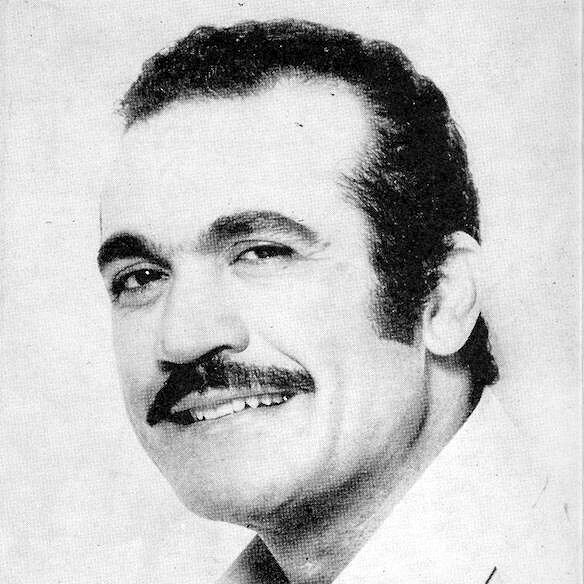
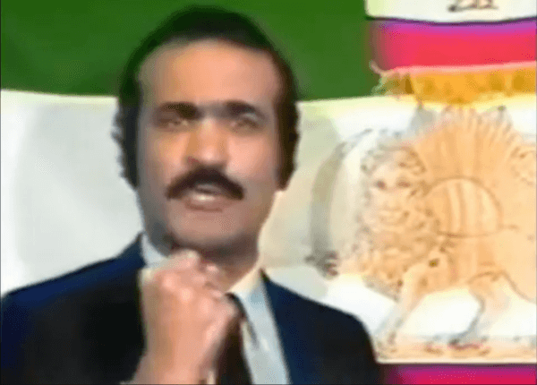

Fereydoon Farrokhzad's biography
Fereydoon Farrokhzad remains an irreplaceable icon of Iranian culture. His contributions to Persian music, poetry, television, and politics resonate with people to this day. Let us dive deeper into his story.
Early years
Fereydoon was born on the 7th of October 1938 into a large and illustrious family in Tehran. He was the fourth of seven children of Colonel Mohammad Bagher Farrokhzad and his wife Touran Vaziri-Tabar. His siblings included Pooran, Amir Masoud, Forough, Gloria, Mehrdad, and Mehran.

Feri, as he was nicknamed at home, was a sensitive child, who had a deep connection with his mother and exhibited a profound love for music and poetry from an early age.
Growing up in an environment rich in artistic expression, the Farrokhzad children were encouraged to explore their creative talents. Their father, an avid collector of books in various languages and a poet himself, cultivated a love for literature, while their mother was renowned for her extensive collection of dolls.
Fereydoon was a keen reader from a young age, often found immersed in books of various genres. James Baldwin was among his favourite authors. His passion for reading not only enriched his mind but also fueled his imagination, laying the foundation for his later creative endeavors.
Additionally, Fereydoon had a talent for cooking, a skill he honed alongside his mother in the family kitchen. He delighted in experimenting with flavors and techniques, often preparing meals for his family and friends with love and care.
Fereydoon also had a special fondness for animals, particularly dogs. He found solace in their loyal and unconditional affection, spending hours playing and bonding with his beloved companions. His compassion for animals reflected his gentle and nurturing spirit, endearing him to both humans and furry friends alike.
Fereydoon's two elder sisters, Pooran and Forough, were writing prose and poetry.
Forough, destined to become one of the most famous poets of Iran, had a great influence on her little brother. The siblings shared a close bond until Forough's tragic death in a car accident. Even after Fereydoon left Iran to study abroad, they maintained a tender correspondence, with Forough supporting him financially despite her own limited means. Following her untimely passing, Fereydoon established a literature award in her honor (Jayezeh-ye Forugh Farrokhzad).


Another formative aspect of young Fereydoon's life was his involvement in left-wing politics. At the age of 15, he was already a member of the youth organization of the banned Tudeh party. Unbeknownst to his father, who was a colonel in the Imperial Armed Forces of Iran, he had hidden several comrades from the Tudeh youth organization at the family home. Some of the Tudeh members, such as Mehdi Khanbaba Tehrani, became Farrokhzad's close friends for life.
Study in Germany (1958-1967)
After finishing Dar ul-Funun High School in Tehran, Fereydoon went to Germany in 1958 at the age of 20 in order to pursue university studies. During the week, he attended a language school, while on weekends, he worked at a farm in the village of Versmold in Lower Saxony, commuting regularly between Munich and the farm. Upon passing a German language examination, he gained admission to study Social Sciences at Ludwigs-Maximilians-Universität in Munich.

In 1962, Fereydoon met the writer and actress Anja Buczkowski, whom he married later that year, and they remained together for 12 years. Anja, who was studying German literature and recited poetry for a literary program on Bavarian radio, played a pivotal role in nurturing Fereydoon's interest in the German language and poetry. Also in 1962, Fereydoon's initial poetic works were published in German newspapers and poetic collections. In 1964, his poetry book “Another Season” (Andere Jahreszeit) was published.
Letters to Marek
In 1965, Fereydoon obtained the address of Anja's cousin, Marek, who resided in Poland, and the two became pen pals. Over time, Fereydoon developed romantic feelings for this young man, expressing his emotions in passionate letters. In the same letters, he also articulated his love for Poland and delivered scathing critiques of the Shah of Iran and West German society. Although Fereydoon planned to visit Marek in Poland, they never met, and their correspondence ceased in 1967 after Forough's death. Nevertheless, Marek preserved these letters throughout his life, and after his passing in 2017, they were discovered by the Belgian artist Stephane Rutten. You can read the letters here.
Fereydoon only had the opportunity to visit Poland in 1972 when he performed at the Sopot festival, but there is no record of him ever meeting Marek in person.
While studying at the LMU in Munich, Fereydoon also attended lectures at the University of Vienna and the Free University of Berlin. He was captivated by the story of the divided country and often traveled between East and West Berlin, comparing his observations.
During one of his visits to East Berlin, he encountered Johannes Bobrowski, an anti-fascist poet, whose ideas profoundly influenced Farrokhzad both artistically and politically. Farrokhzad and Bobrowski maintained their friendship through the exchange of letters and postcards until Bobrowski's sudden death in 1965. Their discussions likely motivated Fereydoon to write his master's thesis in Political Science on the relationship between the state and the Protestant church in the GDR. He immediately started working on a Ph.D. thesis after finishing his master's degree - the title of this work was “Marx, Engels, Lenin, Rosa Luxemburg, and the Polish Question”.
Return to Iran
After Forough's death in February 1967, Fereydoon decided to return to Iran together with Anja and their 1-year-old son Rostam. Several years later, Anja moved back to Germany and took Rostam with her, leaving Fereydoon alone in his home in the Amir Abad district of Tehran.

At first, Fereydoon tried to establish a career in politics or education. However, given the overtly leftist theme of his diploma, such pursuits were unattainable in the political climate of Shah's Iran. It was his sister, Pooran, who provided him with an opportunity at the central Iranian Radio station, where Fereydoon began his career as a host. His innate charisma and talents propelled his career forward, eventually leading him to become a renowned radio personality and recording artist. However, it was his presence on central television that catapulted him to nationwide recognition.
TV career
During the 70s, Fereydoon's face and voice were recognized all over Iran. Not only did he captivate audiences as a singer, but he also hosted several TV shows and produced dozens.
Among Farrokhzad's most renowned television endeavors was "The Silver Carnation" (Mikhakeh Noghrei), a program that showcased interviews with contemporary artists, writers, and poets alongside captivating musical and dance performances. On the show, Farrokhzad introduced and discovered a number of Iranian artists including Sattar, Shohreh, Shahram Solati, Ebi, Morteza, Rouhi Savoji, Hamid Shabkhiz, Leila Forouhar, Saeed Mohammadi, and various others.
Farrokhzad's approach to audience engagement was distinctive: poor people, especially children, were invited to the program free of charge and were given the best seats. Pooran Farrokhzad recalled that once her brother rallied all of Tehran's street sweepers to attend one of his shows.
In 1971, Fereydoon played the main role in a movie titled "Restless Hearts" (Delhaye Biaram). Unfortunately, the film was not well-received and owed its brief success solely to Farrokhzad's popularity. His next opportunity to showcase his acting skills came only 20 years later, in 1991, when he starred in "I Love Vienna", an Austrian comedy directed by Houchang Allahyari.
In an interview with Percy Adlon Fereydoon stated that it's not enough for him to only make money to be happy. Indeed, after getting to a certain level of recognition and financial stability, he devoted himself to philanthropy, often making generous donations and gifts to marginalized communities, children's hospitals, and nonprofit organizations.
Despite Fereydoon's remarkable success, his presence on national television was a perpetual headache for the government. Fearless in addressing political matters, he sometimes broached provocative topics. He also followed his heart when it came to politically motivated actions: for example, he once brought a bouquet of flowers to the mother of an executed political prisoner named Hamid Ashraf, an act that promptly cost him his television job. He was fired several times, once staying without a job for 2 years, but he always came back, because people loved him and there was nothing the Shah's government could do about it.
Personal life
In 1974, Farrokhzad married his second wife, Tarane Sondoozi, in Iran. This marriage was loaded with publicity promos and photo ops, yet only lasted 2 years.
Fereydoon's sexual orientation has been a subject of speculation and debate among fans and scholars. While he openly discussed his attraction to men and had relationships with men, he never explicitly defined his sexual orientation in public statements or interviews.
Some people interpret his openness about his same-sex relationships as indicative of being gay, while others suggest that he may have identified as bisexual or simply avoided labels altogether. Ultimately, without direct confirmation from Farrokhzad himself, it remains unclear how he personally identified in terms of sexual orientation.
What's significant, however, is the impact of his openness and visibility as a queer person in a society where such visibility was rare and often stigmatized. Fereydoon's willingness to discuss his same-sex relationships and experiences helped challenge societal taboos, thereby fostering greater acceptance and understanding of LGBTQ+ individuals in Iranian culture.
The Year of Revolution
In 1979, Fereydoon ardently embraced the revolution against the Shah and sought to align himself with the newly established leftist cultural organization, the Iran Art Workshop (Kargah-e Honar-e Iran). However, instead of acceptance, he was unceremoniously escorted off the premises at gunpoint by organization members who had heard rumors regarding his sexual orientation, deeming him a "pre-revolutionary decadent." The rejection deeply wounded Fereydoon, who had approached the organization with the purest of intentions.
Soon after, as the Revolution metamorphosed into the Islamic Revolution, Farrokhzad observed in shock what was happening to his homeland. Of course, under this regime, he couldn't be a TV personality anymore, and the risk of arrest was constantly looming over his head. At some point, he spent several days in jail and most of his assets were confiscated. After being summoned to the court again, Farrokhzad left Iran in 1982.
Life in exile (1982-1992)
Fleeing Iran, Fereydoon found himself in Turkey, enduring 45 days of absolute poverty and homelessness. Fortunately, a fellow Iranian approached him on the street and offered him shelter and assistance with his visa. Fereydoon migrated to Paris, where he sought asylum.
Reportedly Fereydoon wasn't happy in France. The trauma of becoming a refugee had a lasting effect on his mental health. In later interviews, he even confessed to experiencing suicidal thoughts. Nevertheless, he continued to give concerts across Europe before moving to Los Angeles, a city that promised him inclusion in a vibrant Iranian scene.

Fereydoon immediately disliked LA for its mercantile vibe but worked in the city for several years, hosting radio and television programs for local Persian audiences. Eventually, he moved to Germany and settled in the city of Bonn.
Iraq rescues

During the eight years of the Iran-Iraq war, Fereydoon traveled to the Iranian prisoner-of-war camp in Iraq at least three times, rescued many Iranian captive children, and transferred them to Europe, where they lived with Iranian and European host families before reuniting with parents.
Political activism and identity
After leaving Iran in 1982, Fereydoon began a vigorous political campaign against the mullahs and personally against Khomeini. He condemned the brainwashing, human rights violations, and the utter stupidity of the Islamic regime. His witty and fearless attacks on his opponents didn't go unnoticed. Many friends warned Farrokhzad about the dangers of such a stance, but he was determined to speak out freely against oppression. He played a significant role in solidifying anti-mullah opposition in Iran and beyond.
Despite his opposition to the clerical regime, Farrokhzad's political stance defied easy categorization. He maintained a nuanced perspective on Iranian politics, often challenging simplistic narratives and embracing a pragmatic approach to advancing his ideals. This complexity has led to diverse interpretations of his legacy, with monarchists, liberals, leftists, and nationalists all laying claim to his memory, albeit for different reasons.
Fereydoon commemorated various victims of the regime in his songs, including leftist poet Saeed Sultanpoor, young Kurdish monarchist Jolee Kalantari, and even Mehdi Rahimi, the head of the Shah's police in Tehran, all of whom were executed by Khomeini.
Ultimately, Farrokhzad's political identity remains a subject of debate and interpretation, reflecting the dynamic and contested nature of Iranian politics. As a vocal critic of the clerical establishment and the authoritarian tendencies of the post-revolutionary regime, Farrokhzad became generally associated with liberal and secular opposition movements. His advocacy for freedom of expression, human rights, and democratic reform found support among a broad spectrum of Iranians disillusioned with the oppressive policies of the Islamic government.
His last documented concert Fereydoon ended with this statement: "Long live democratic Iran! Death to fascists and Islamists!". This encapsulates his views quite effectively.
Tragic end
Despite his courage and determination to speak out against the oppressors of his homeland, Fereydoon's political activism eventually led to tragic consequences.
On August 8, 1992, he was found brutally murdered in his apartment in Bonn, Germany. His death shocked the Iranian community and the world, leaving many to mourn the loss of a fearless advocate for freedom and justice.
The circumstances surrounding Farrokhzad's murder remain shrouded in mystery, with speculation pointing to possible political motives. Many believe that his vocal criticism of the Iranian regime made him a target for retribution. Other few suggest personal vendettas or disputes as potential factors.
You can watch a documentary about the investigation here.
Fereydoon's murder served as a grim reminder of the dangers faced by political dissidents and outspoken critics of authoritarian regimes. His untimely death was not only a loss for his family and friends but also for the broader community that admired his courage and conviction.
In the wake of his tragic end, Fereydoon's legacy as a passionate advocate for freedom of expression and human rights endured. His memory continues to inspire those who strive for a more just and equitable world, serving as a poignant reminder of the ongoing struggle for liberty and democracy.
Legacy
While Fereydoon Farrokhzad's life was cut short by tragedy, his legacy as an artist, political activist, and openly queer person continues to resonate deeply with people around the world.
As an artist, Fereydoon left an indelible mark on Persian music and poetry. His soulful voice captured the essence of love and longing, earning him a devoted following that transcended borders and generations. He also gave a voice to several of his sister's poems, bringing her words to life in a mesmerizing fusion of music and poetry that continues to enchant audiences worldwide. His contributions to Persian culture remain cherished and celebrated, inspiring countless musicians and poets to follow in his footsteps.
In the realm of politics, Fereydoon fearlessly stood up against injustice, using his platform to speak out against the repressive policies of the Iranian regime. His unwavering commitment to freedom of expression and human rights serves as a beacon of hope for those fighting for democracy and equality, both within Iran and beyond.
As one of the few openly queer individuals in the nation at the time, Fereydoon broke barriers and challenged societal norms, paving the way for greater visibility of LGBTQ+ people in Iranian society. His courage to live authentically and unapologetically inspired others to embrace their true selves, fostering a sense of solidarity and belonging within the queer community.
Fereydoon's spirit lives on through his art, activism, and the countless lives he touched. His legacy serves as a reminder of the power of resilience, creativity, and compassion, inspiring future generations to continue the fight for justice, equality, and human dignity.